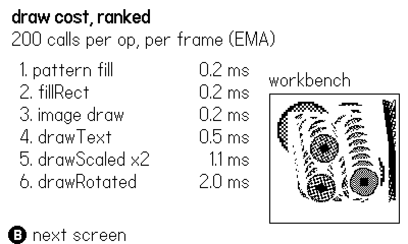
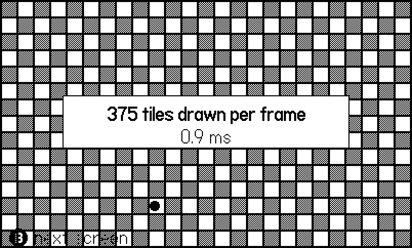
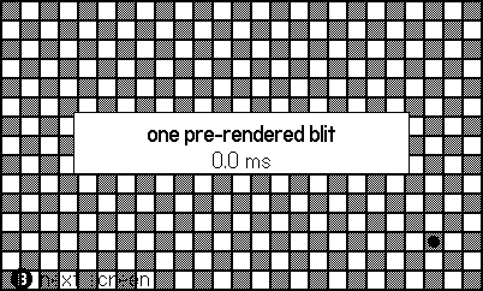

19 Performance and the Device
At 30 frames per second, a frame is 33.3 milliseconds. That is the whole budget: input, simulation, drawing, the garbage collector’s cut, everything. Spend 34 and the frame is late; spend 34 every frame and your 30 fps game is a 25 fps game with a headache. The good news is that the budget is fixed, public, and measurable — and on a console with exactly one hardware configuration, a millisecond you save is saved for every player on earth.
This chapter is about where the milliseconds go and how to get them back. The example, 19-bench, does something none of the previous examples did: it measures itself, live. One screen microbenchmarks the drawing API call by call and ranks the results in a table; two more screens stage the single biggest win in Playdate rendering — the pre-rendered background — as a before-and-after with the millisecond cost printed on each. The numbers in this chapter’s figures were measured by the code in this chapter’s listings, on the machine that built this book.
One promise kept from Chapter 1, and one warning renewed: the Simulator runs your Lua on a desktop CPU that is enormously faster than the device’s little ARM core. Everything here is honest about which numbers travel and which do not.
19.1 The budget, and the meter
Do the arithmetic once and keep it taped to your monitor. At 30 fps you have 33.3 ms; at the display’s 50 fps maximum you have 20 ms. The Playdate runtime spends part of that for you — pushing the frame buffer to the screen, running the audio engine, collecting garbage — so your playdate.update realistically owns somewhere around twenty-something milliseconds before the frame rate starts to sag. When it does sag, nothing crashes; the game just gets slower and the crank gets less responsive, which players feel before they can name it.
The first tool is the crudest: playdate.drawFPS(x, y) draws the measured frame rate on screen, and playdate.getFPS() returns it, so a smoke-build heartbeat can carry it (Chapter 18). If the number reads 30, you are inside budget; what those tools cannot tell you is how close to the edge you are. For that you time the frame yourself. playdate.getCurrentTimeMilliseconds() returns a millisecond counter; two reads bracket the work. But a single sample is noisy — the GC ran this frame, a target spawned, the number jumps. The shipped games all smooth it with an exponential moving average, and the wrapper comes from Molt verbatim:
-- molt/source/main.lua:232
local frame = 0
function playdate.update()
frame = frame + 1
local t0 = playdate.getCurrentTimeMilliseconds()
Harness.frame(frame, tick)
local ms = playdate.getCurrentTimeMilliseconds() - t0
G.updMs = (G.updMs or 0) * 0.9 + ms * 0.1
endEach frame contributes ten percent of its cost to a rolling average; spikes show up but do not whipsaw the reading. Molt reports updMs in every heartbeat, which means every smoke run of the full game is also a performance regression test — a room whose cost creeps from 6 ms to 20 ms gets noticed the same night it happens. This chapter’s example wears the same wrapper:
-- Molt's meter on the book's wrapper: time the whole frame,
-- EMA it, and let the heartbeat carry the number out.
local realUpdate = playdate.update
local updMs = nil
function playdate.update()
frame = frame + 1
local t0 = playdate.getCurrentTimeMilliseconds()
Harness.frame(frame, realUpdate)
local d = playdate.getCurrentTimeMilliseconds() - t0
updMs = (updMs or d) * 0.9 + d * 0.1
Harness.set("updMs", math.floor(updMs * 10) / 10)
endWhen the EMA says “too slow” but not why, the SDK has profilers. In the Simulator, the Sampler window profiles your Lua directly (and can sample device performance over USB), and the Malloc Log maps the 16 MB heap. In code, sample(name, fn) from CoreLibs/utilities/sampler times any block you wrap and prints per name — move the wrap around to bisect a hot path. On hardware only, playdate.getStats() returns the percentage of time spent in each system task (game, GC, audio, kernel, …); in the Simulator it returns nil, so guard the call. And for battery soak tests, playdate.getBatteryPercentage() is a plain 0–100 read you can log in a heartbeat.
19.2 Measuring the drawing API
Most Playdate frames are drawing-bound: simulation is arithmetic on a few dozen tables, but every pixel put on screen costs real work. So the practical question is not “is Lua fast” but “what does each draw call cost relative to the others”. The example’s first screen answers it empirically. Each frame it runs the same six operations — a plain fillRect, the same fill through a dither pattern, a 32x32 image blit, the same image through drawScaled, through drawRotated, and a line of drawText — two hundred calls each, into a clipped “workbench” square, timed and smoothed:
-- Time a batch of N calls, then fold it into a rolling average.
-- getCurrentTimeMilliseconds resolves whole milliseconds, so a
-- single sample is mostly noise -- the EMA is the meter.
function Bench.update()
gfx.setClipRect(X, Y, SIDE, SIDE)
for _, op in ipairs(ops) do
if op.pre then op.pre() end
local t0 = ms()
for i = 1, N do op.fn(i) end
local d = ms() - t0
if op.post then op.post() end
op.ema = (op.ema or d) * (1 - ALPHA) + d * ALPHA
Harness.set(op.name, math.floor(op.ema * 10) / 10)
end
gfx.clearClipRect()
table.sort(ops, function(a, b) return a.ema < b.ema end)
endThe operations themselves are data, one entry per op, so adding a seventh candidate is three lines:
-- Every op draws into the same clipped workbench, at positions
-- that vary with `i`, so no op wins by drawing in one spot.
-- pre/post run once per batch, outside the timer's concern.
local ops = {
{ name = "fillRect", fn = function(i)
gfx.fillRect(X + i % 80, Y + i * 7 % 80, 32, 32)
end },
{ name = "pattern fill",
pre = function()
gfx.setDitherPattern(0.5,
gfx.image.kDitherTypeBayer4x4)
end,
post = function() gfx.setColor(gfx.kColorBlack) end,
fn = function(i)
gfx.fillRect(X + i % 80, Y + i * 7 % 80, 32, 32)
end },
{ name = "image draw", fn = function(i)
sprite:draw(X + i % 80, Y + i * 7 % 80)
end },
{ name = "drawScaled x2", fn = function(i)
sprite:drawScaled(X + i % 50, Y + i * 7 % 50, 2)
end },
{ name = "drawRotated", fn = function(i)
sprite:drawRotated(X + 30 + i % 60,
Y + 30 + i * 7 % 60, i * 3 % 360)
end },
{ name = "drawText", fn = function(i)
gfx.drawText("SCORE 1234", X + i % 40, Y + i * 7 % 90)
end },
}The results draw as a live ranked table — cheapest at the top — next to the workbench where the actual drawing lands (Figure 19.1):

Run it and watch the ordering, because the ordering is the mental model you will carry:
- Rect fills are cheap, and a pattern fill costs about the same as a solid one — the pattern is applied per word, not per pixel lookup. Dither is not a luxury (Chapter 4).
- A straight image blit is cheap — of the same order as a rect fill.
img:draw(x, y)with no transformation is the workhorse the whole platform is built around. drawScaledcosts a multiple of a plain draw, because it resamples every destination pixel.drawRotatedis the most expensive image call on the list — every destination pixel is sampled along a rotated grid. It is dramatically slower than a plain blit; if something rotates every frame, pre-render its rotations into an imagetable at load (Chapter 5) and blit the nearest frame.drawTextis costly per call — each glyph is a small image draw plus kerning logic. A static label re-rendered every frame is waste; draw it once into an image (gfx.imageWithText, orpushContextonto a cached image) and blit that. Score counters that change every frame are fine; paragraph boxes are not.
The Simulator executes your Lua at desktop speed — commonly ten to fifty times faster than the ARM core in the device. The ranking above mostly holds on hardware (a rotation is expensive everywhere), but the absolute milliseconds do not travel, and neither do some ratios: device memory is slower relative to compute, so blit-heavy code falls further behind on hardware than the Simulator suggests. The only performance verdict that counts is rendered on the device. Sideload your game (Chapter 1: Device menu → Upload Game to Device), put drawFPS or the EMA meter on screen, and watch it on the yellow hardware. Do this before the performance work, not after — you cannot fix a number you never measured.
19.3 The number one win: pre-render the background
The single most profitable optimization in Playdate rendering is also the least clever: stop drawing things that did not change. The classic case is the tile map. A 400x240 screen is 25x15 tiles of 16 pixels — 375 tiles — and the naive loop repaints every one of them every frame:
-- the "before": every tile, every frame
local function drawTiles()
for y = 1, H do
for x = 1, W do
local sx, sy = (x - 1) * TILE, (y - 1) * TILE
if (x + y) % 2 == 0 then
gfx.setDitherPattern(0.5,
gfx.image.kDitherTypeBayer4x4)
gfx.fillRect(sx, sy, TILE, TILE)
gfx.setColor(gfx.kColorBlack)
end
gfx.drawRect(sx, sy, TILE, TILE)
end
end
endThe map never changes. So draw it once, at load time, into a full-screen image, and a frame’s background becomes a single blit:
-- the "after": the same tiles drawn ONCE into an image at load;
-- from then on a frame's background is a single blit
function Pre.build()
bg = gfx.image.new(400, 240, gfx.kColorWhite)
gfx.pushContext(bg)
drawTiles()
gfx.popContext()
endThe example stages both versions as screens B cycles through, each timing only its background pass:
function Pre.update(mode)
local t0 = ms()
if mode == "tiles" then
drawTiles()
else
bg:draw(0, 0)
end
local d = ms() - t0
if mode == "tiles" then
emaTiles = (emaTiles or d) * 0.9 + d * 0.1
else
emaBlit = (emaBlit or d) * 0.9 + d * 0.1
end
endFigure 19.2 and Figure 19.3 are the before and after, with the measured cost printed mid-screen. Even at Simulator speed the gap is visible; on the device it is the difference between a game that works and one that does not — this is the tmap pattern from Chapter 7, where scrolling worlds render as one big pre-rendered image blitted at the camera offset, repainting individual cells only when a tile actually changes.


The generalization: anything static for many frames — HUD frames, dialog boxes, the score label, a boss’s name banner — earns an image cache. The pattern is always the same three steps: render once into a gfx.image (usually via pushContext), blit per frame, invalidate and re-render only when the content actually changes.
19.4 Garbage: the tax on tables
Lua allocates whenever you create a table, a closure, or a fresh string — and everything allocated must eventually be collected. The collector runs inside your frame budget. A game that builds garbage calmly is fine; a game that churns — allocating hundreds of short-lived tables per frame — pays twice, once to allocate and once to sweep, and the sweep arrives as stutter.
The churn habits to avoid were flagged back in Chapter 2, and they are worth restating as performance advice:
- Reuse tables across frames (the input snapshot, scratch vectors, particle pools) instead of building new ones. The shipped games’
Input.gatherreturning a fresh table each frame is a deliberate, budgeted exception — one small table per frame is calm; one per entity per frame is churn. - Avoid
..concatenation in per-frame paths; every result is a new string. Build display strings only when the value changes, or usestring.formatonce rather than chained pieces. - Beware hidden allocators: varargs packing,
{...}, closures created inside loops.
When tuning beyond habits, the SDK exposes the collector itself. playdate.setCollectsGarbage(false) turns automatic collection off entirely — you then own calling Lua’s collectgarbage() at safe moments (a level transition, a pause screen). Less drastically, playdate.setMinimumGCTime(ms) sets how long the collector is guaranteed to run each frame (default 1 ms — lower it if you generate little garbage and want the bandwidth back), and playdate.setGCScaling(min, max) maps memory pressure to collector time: below min (a 0–1 fraction of total memory) the collector gets only the minimum; above max it gets all free time; between, it scales. These are late-project dials, not day-one settings — the default behavior is right until measurement says otherwise.
19.5 When Lua is not enough
There is an escape hatch, and it deserves exactly one paragraph. The Playdate C API lets you write performance-critical pieces — a particle system, a software rasterizer, an audio synthesizer — in C and call them from Lua, or build the entire game in C. The costs are real: a cross-compiler toolchain, manual memory management, and a much slower iteration loop than the Lua one this book runs on. In sixty shipped Lua games, none needed it; pre-rendering, caching, and the discipline in this chapter kept them all at 30 fps on hardware. Reach for C when a measured hot loop survives every trick above — not before.
19.6 What you know now
- The budget is 33.3 ms at 30 fps (20 ms at 50), shared with the system; measure your share with two
getCurrentTimeMilliseconds()reads and an EMA, and put the number in the heartbeat so every smoke run doubles as a performance regression test. drawFPS/getFPSgive the verdict;sample()and the Simulator’s Sampler find the culprit;getStats()breaks down system time on hardware (it returnsnilin the Simulator).- The draw-cost hierarchy, measured live by this chapter’s example: fills and plain blits cheap, pattern fills basically free over solid ones,
drawScaleda multiple,drawRotatedthe most expensive image call,drawTextworth caching. Pre-render rotations and static text into images. - The biggest win is pre-rendering: draw static content once into an image and blit it — 375 tile draws become one call. Repaint cells only when they change.
- Table, closure, and string churn feed the garbage collector at the expense of your budget; reuse instead of reallocating, and touch
setMinimumGCTime/setGCScaling/setCollectsGarbageonly under measurement. - The Simulator is 10–50x faster than the device: rankings mostly travel, absolute numbers never do. The verdict is rendered on sideloaded hardware, early.
- The C API exists for measured emergencies; sixty Lua games never needed it.
Your game is correct (Chapter 18) and it holds 30 fps. One thing remains: making it shippable — the launcher card, the metadata, the packaging trap, and the release itself. That is Chapter 20, the last stop.